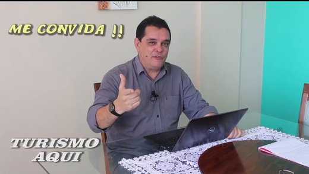

00:00:06.707
Apresentador gesticula diante de um notebook, com as marcas Me Convida e Turismo Aqui na imagem.
Local não identificado
Na abertura, o apresentador lança o quadro Me Convida e pede sugestões de comunidades e experiências.
Transcrição · 00:00:00 | 00:00:07
Turismo Aqui — quadro de vídeo publicado no YouTube